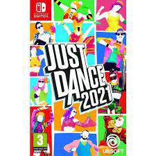

運動遊戲
健身拳擊2
《健身拳擊 2：節奏運動》收錄各種拳擊動作，只要按照教練的指示，配合節奏活動身體，就可以運動全身。課程跟樂曲也全面翻新。除了按照遊戲分數改變鍛鍊畫面背景的「Zone」等視覺表現上的強化，還支援 2 人同時遊玩。此外，本作還加入了 3 位新的教練。全員共 9 位教練將示範動作的重點，為你打氣，支援你的鍛鍊生活。

健身環大冒險
搭配 Ring-Con 與腿部固定帶推出的專屬遊戲《健身環大冒險》是款透過體感操作的冒險遊戲，故事敘述一隻邪惡的健身飛龍「跩哥夫」讓世界陷入混亂，玩家必須挺身而出幫助世界恢復和平。冒險途中玩家將透過踏步來移動、透過擺動、擠壓 Ring-Con 來控制諸如跳躍、飛行與轉向等操作，通過一個又一個的難關。

舞力全開 2021
《Just Dance 舞力全開 2021》，和你的朋友和家人一起享受前所未有的跳舞樂趣。40 首橫跨排行榜冠軍單曲到親子歌曲，還可透過訂購「Just Dance Unlimited」串流服務暢跳超過 550 首歌曲。